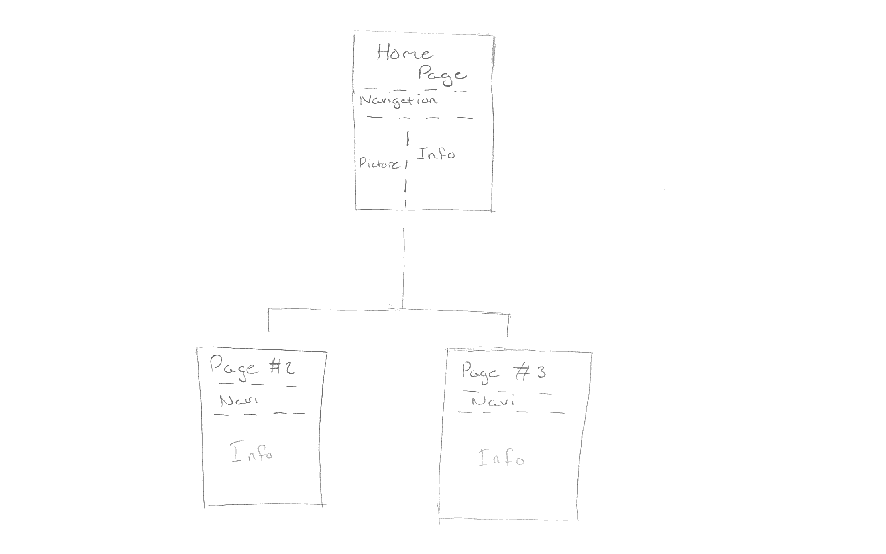

Design Process
Before we get started creating our site, we first have to know what exactly
we're creating.
To your left is a list of resources that have helped me out in the past whenever I've
been stumped. We will be using this a lot.
-Step 1:
Let's start off by creating our own little mini map. Creating a map is known as site mapping,
which will help us in the long run because it gets all of our ideas on to a document before
doing actual work.
